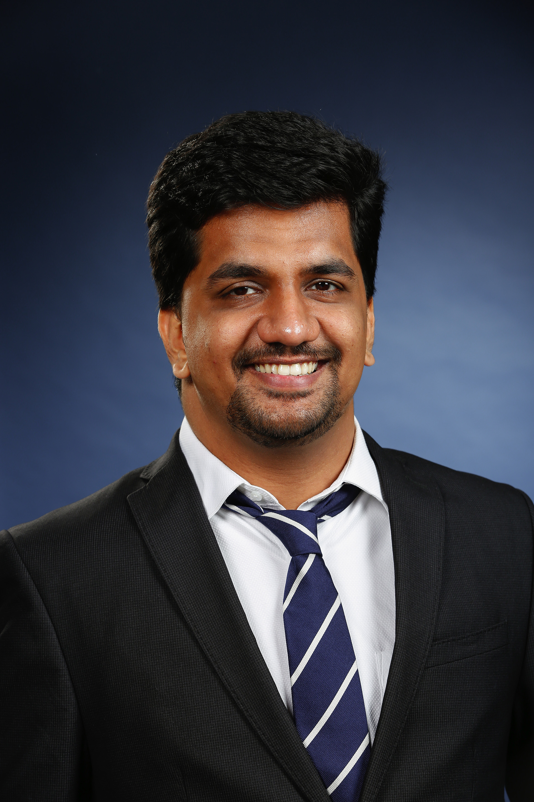

Ameya Wagh
About Me

I am a Sr. Machine Learning Engineer and Roboticist with a seven + year track record of engineering and researching real-time autonomous systems. My core specialization lies at the intersection of CV/ML, and robotics.
My professional experience involves core development on perception and behaviors for autonomous vehicle systems, including commercial autonomous vehicles (passenger and truck fleets). My research experience include joint perception and manipulation tasks for highly sophisticated humanoid robots such as the Boston Dynamics ATLAS humanoid robot. My research experience also extends in computer vision for biomedical applications.
My research focuses primarily on tackling complex Perception Challenges by advancing methods for 3D object detection, semantic reasoning, and efficient scene reconstruction. I leverage Python, C/C++, CUDA, and modern machine learning frameworks (PyTorch, TensorFlow) to develop and deploy high-performance models targeting various embedded devices in robotics and autonomous driving applications. This research focus is backed by a strong publication history in leading academic venues.
Highlights


Professional Services
- International Conference on Computer Vision (ICCV-WiCV) 2025
- International Conference on Learning Representations (ICLR-FMWild) 2025
- Association for the Advancement of Artificial Intelligence (AAAI-MURE) 2025
- Association for the Advancement of Artificial Intelligence (AAAI-MARW) 2024
- Association for the Advancement of Artificial Intelligence (AAAI-UC) 2024
- Neural Information Processing Systems (NeurIPS-lxai) 2024 – 2025
- Machine Learning for Health (ML4H) 2024
- IEEE-ACCESS 2025 – present
- Part of the IEEE Standard Working Group P1955 developing IEEE standards for 6GRobo. (More Info) 2024 – 2027
Publications
Loading publications...